~10 min de lectura
1 Objetivos de la práctica
En esta práctica trabajaremos con un mismo edificio en dos representaciones complementarias: un modelo BIM (Building Information Modeling) en formato IFC (Industry Foundation Classes) y una versión semántica en OWL (Web Ontology Language). Al finalizar, deberías ser capaz de:
- Entender qué aporta BIM como sistema de organización de información de un edificio.
- Explorar un modelo IFC con un visor BIM y localizar elementos concretos.
- Abrir una ontología en Protégé y recorrer sus clases, propiedades e individuos.
- Realizar consultas semánticas con un razonador para recuperar información del modelo.
De manera orientativa, la Figura 1 muestra el flujo de trabajo que seguiremos en esta práctica, desde la exploración del modelo BIM en un visor hasta la consulta de información a través de una ontología semántica:
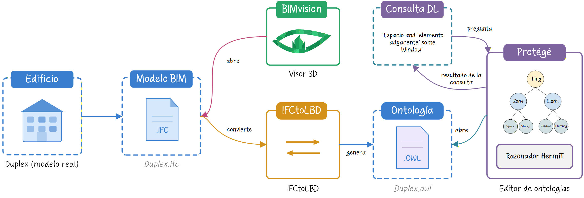
2 Introducción a BIM
Cuando se diseña un edificio no solo se define su forma. También se decide qué elementos lo componen, cómo se relacionan entre sí y qué información será necesaria más adelante, tanto durante la obra como en su uso posterior. El modelado de información de construcción (BIM, Building Information Modeling) surge precisamente para organizar todo eso dentro de una representación digital coherente.
Por eso, un modelo BIM no es simplemente un modelo 3D. Además de la geometría, puede incorporar materiales, identificadores, relaciones espaciales, propiedades técnicas y otros datos útiles para distintas fases del proyecto. La idea es que el modelo deje de ser solo algo que se visualiza y pase a ser también algo que se consulta, se coordina y se reutiliza.
Esta forma de trabajo resulta especialmente útil porque reúne en un mismo entorno información que, de otro modo, estaría dispersa entre planos, tablas, memorias y documentos técnicos. En lugar de revisar cada pieza por separado, BIM permite entender mejor el edificio como un sistema de objetos conectados entre sí.
Esa utilidad se aprecia sobre todo cuando se piensa en el ciclo de vida de la edificación. Un edificio pasa por distintas etapas: diseño, construcción, uso, mantenimiento, reforma e incluso desmontaje o sustitución. En cada una de ellas se necesita información distinta, aunque muchas veces está relacionada. BIM permite que una misma base de información acompañe al edificio a lo largo de ese proceso, adaptándose a las necesidades de cada fase: puede servir para diseñar y coordinar, para detectar interferencias antes de construir, para planificar la obra o para gestionar después el mantenimiento y la explotación.
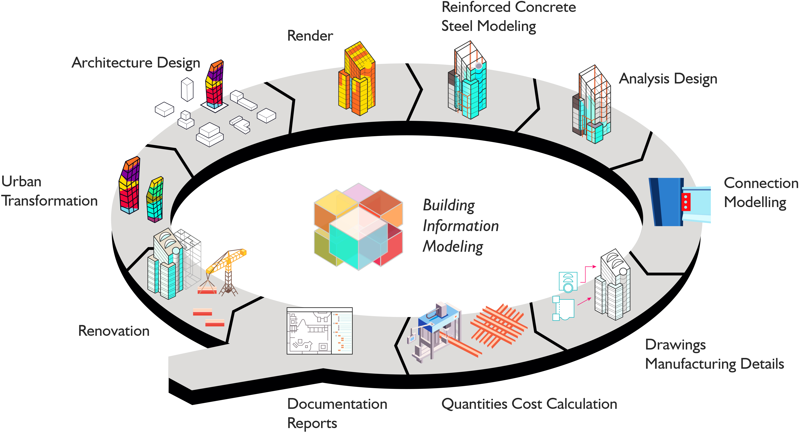
Como curiosidad, existen técnicas de captura de la realidad que también pueden integrarse en este tipo de flujos. Una de las más conocidas es LiDAR (Light Detection and Ranging), que permite obtener nubes de puntos tridimensionales del edificio o de su entorno a partir de mediciones láser.
Este tipo de información puede ser útil, por ejemplo, en rehabilitación, documentación del patrimonio o control de obra, donde interesa partir del estado real de un elemento construido. A veces, estas capturas se emplean como base para generar modelos as-built en procesos conocidos como scan-to-BIM.
En cualquier caso, esta práctica no se centra en esas técnicas de captura, sino en entender qué es BIM, qué tipo de información organiza y por qué resulta útil a lo largo del ciclo de vida de la edificación.
Modelo del Monumento a Goya (Zaragoza) por Sketchfab; nube de puntos derivada del mismo modelo.
Nube de puntos de estancia: Point cloud from DIY laser scanner (lidar), de Alexey Yuzhakov (@tour3d), Sketchfab, licencia CC BY-NC.
Click derecho para rotar, click izquierdo para trasladar y la rueda para hacer zoom.
En el siguiente vídeo de Autodesk Building Solutions se explica de forma sencilla qué es BIM y qué ventajas aporta a lo largo del ciclo de vida de un edificio:
En esta práctica no vamos a modelar un edificio desde cero. Vamos a aprender a leer un modelo BIM y a consultar su información, primero con un visor IFC (Industry Foundation Classes) y después con herramientas semánticas.
3 Material de trabajo
Utilizaremos los siguientes ficheros:
- Duplex.ifc, que contiene el modelo BIM original del apartamento dúplex en formato IFC (Industry Foundation Classes).
- Duplex.owl, que contiene una versión semántica del mismo modelo en lenguaje OWL (Web Ontology Language).
- beo.owl y bot.owl, que pueden ser necesarios si Protégé te pide resolver manualmente algunas importaciones.
Como software de apoyo utilzaremos BIMvision para visualizar el IFC y Protégé para explorar la ontología.
4 Ejercicio 1: explorar el modelo IFC
El primer paso es abrir Duplex.ifc en BIMvision. El objetivo no es todavía hacer consultas complejas, sino familiarizarse con el edificio, sus plantas y la forma en que cada elemento aparece identificado en el modelo.

Empieza por recorrer la planta baja y la planta superior, y acostúmbrate a seleccionar elementos individuales. Fíjate en cómo el visor muestra sus nombres, identificadores y propiedades básicas.
Durante esta primera exploración, responde a las siguientes preguntas:
- ¿Cuántas ventanas hay en el modelo?
- ¿Qué identificador tiene cada una?
- ¿Qué altura y qué anchura tiene cada ventana?
5 Del IFC al modelo semántico
El siguiente paso consiste en pasar de una representación BIM convencional a una representación semántica. En lugar de trabajar solamente con geometría y propiedades dentro de un visor, vamos a describir el edificio mediante clases, propiedades e individuos conectados entre sí en una ontología.
En esta práctica no es necesario que hagas la conversión por tu cuenta, porque el fichero Duplex.owl ya está preparado. Aun así, conviene entender de dónde sale: se ha generado a partir del IFC usando IFCtoLBD 2.43.5, una herramienta que transforma modelos IFC en datos enlazados reutilizando vocabularios existentes del ámbito de la construcción.
El fichero Duplex.owl se ha generado con la configuración BOT + PRODUCT + PROPS, Level L1. Además, se han eliminado manualmente las referencias a dos ontologías externas para simplificar la práctica.
6 Ejercicio 2: abrir la ontología en Protégé
Para abrir Duplex.owl usaremos Protégé, un editor de ontologías gratuito y disponible para varios sistemas operativos. No requiere una instalación compleja: basta con descargar el archivo comprimido, descomprimirlo y ejecutar la aplicación.
La interfaz puede cambiar ligeramente según la versión de Protégé, pero la idea general es siempre la misma: pasar de la estructura conceptual a los elementos concretos del edificio.
Una vez abierto el fichero, encontrarás varias vistas desde las que puedes navegar por la ontología. Debajo del título de la ontología, converters, puedes encontrar una pestaña llamada Entities que te permitirá acceder a las siguientes categorías:
- Classes, para ver la jerarquía de clases del dominio.
- Object properties, para ver propiedades cuyo valor es otro objeto o individuo.
- Data properties, para ver propiedades cuyo valor es un dato literal.
- Individuals, para ver las instancias concretas del modelo.
La Figura 4 muestra el resultado de seleccionar Clases y, concretamente, Edificio. Podeis observar cómo la interfaz nos muestra que Edificio es una subclase de Zona.

Puedes encontrar una pequeña introducción a la interfaz de Protégé en el siguiente vídeo, aunque no está orientado a nuestro mismo modelo, por lo que no es necesario seguirlo al pie de la letra:
También debes tener en cuenta que muchas entidades tienen etiquetas en varios idiomas. Dependiendo de la configuración de tu equipo, Protégé puede mostrar nombres en castellano o en inglés. Por ejemplo, la clase Edificio ‐ http://w3id.org/bot/Building tiene etiquetas Building, Edificio, etc. En este guion se asume que las etiquetas se muestran en castellano siempre que sea posible.
6.1 Qué debes localizar
Dentro de la ontología, localiza:
- La clase que permite representar las ventanas.
- Las propiedades que representan la altura y la anchura de una ventana.
- Una ventana concreta y los valores de sus propiedades.
Comprueba además si esos valores coinciden con los que viste en el visor IFC durante el ejercicio anterior.
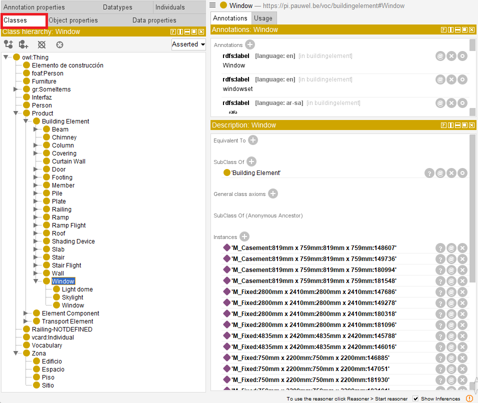


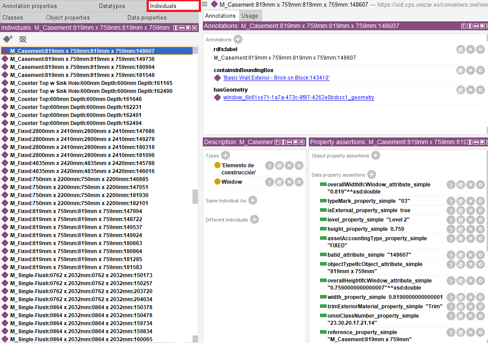
7 Ejercicio 3: razonamiento e inferencia
Una de las ventajas de trabajar con ontologías es que no solo podemos leer datos explícitos, sino también inferir información nueva a partir de la estructura del modelo y de las restricciones definidas en la ontología.
Para ello, activa un razonador desde el menú superior Reasoner. En esta práctica se recomienda utilizar HermiT. Inicia el razonador mediante Reasoner > Start reasoner. Una vez cargado, podrás abrir la pestaña DL Query para lanzar consultas sobre clases e individuos.
Si en algún momento actualizamos la ontología, tendremos que utilizar la opción Synchronize reasoner para que el razonador actualice su información y pueda responder a las consultas correctamente.
7.1 Consultas propuestas
A través de la pestaña DL Query, recupera las instancias de la clase que representa las ventanas. Pinchando en alguna de ellas, puedes ver los valores de las propiedades (tanto los originales como los inferidos por el razonador, si los hubiera).
Con el razonador activo, realiza las siguientes comprobaciones:
- Recupera las instancias de la clase que representa las ventanas.
- Recupera las superclases de esa clase.
- Recupera las instancias de alguna de esas superclases para comprobar si el razonador también devuelve instancias indirectas.
- Vuelve a consultar las instancias de la clase de ventanas y haz clic en el símbolo
?de alguna de ellas para ver al menos una explicación.
En muchas instalaciones, las consultas se escriben con los nombres cortos en inglés, por ejemplo Window, aunque en la interfaz veas etiquetas en castellano.
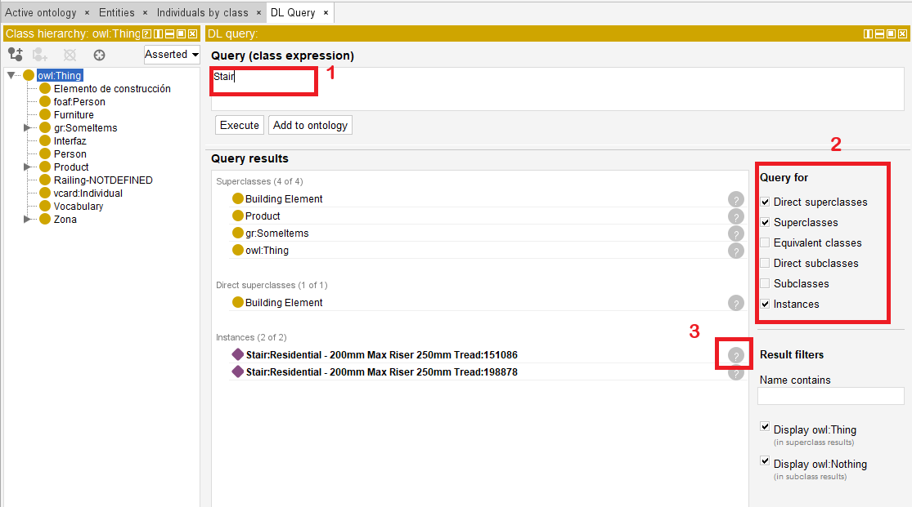
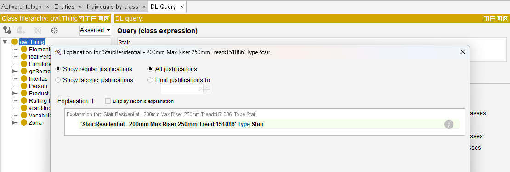
8 Ejercicio 4: consultas más expresivas
Una vez dominadas las consultas básicas, podemos construir expresiones más ricas combinando clases y propiedades. Esto permite formular preguntas que no se reducen a “dame todas las instancias de una clase”, sino a “dame todos los elementos que cumplan una determinada condición”.
Por ejemplo, lanza la siguiente consulta:
Espacio and 'elemento adyacente' some Window
Esa expresión representa el conjunto de espacios que tienen al menos un elemento adyacente que pertenece a la clase Window.
A medidas que escribes la consulta, Protégé te ofrece sugerencias de autocompletado para las clases y propiedades. Si no recuerdas el nombre exacto, puedes aprovechar esa función para construir la consulta. Si no aparecen las sugerencias a medida que escribes, puedes pulsar Ctrl + Space para forzar que se muestren.
Responde a estas preguntas:
- ¿Cuántos individuos recupera la consulta?
- ¿Qué tipo de espacios son?
- ¿Coincide ese resultado con lo que esperarías al observar el edificio en el visor IFC?
9 Ejercicio 5: provocar una inconsistencia
Si una ontología se vuelve inconsistente, el razonador ya no puede trabajar correctamente con ella. En ese caso, Protégé muestra un aviso y permite abrir una explicación para entender qué axiomas están entrando en conflicto.
En este ejercicio vamos a provocar una inconsistencia de forma controlada. La idea es declarar como funcional la propiedad que representa la altura de una ventana y, después, asignar a una misma ventana dos valores distintos para esa altura.
En una ontología, una propiedad funcional es una propiedad que puede tener como máximo un valor para cada individuo. Por ejemplo, si la propiedad que representa la altura de una ventana se declara funcional, una misma ventana no debería tener dos alturas distintas. Si añadimos dos valores incompatibles, el razonador detectará que el modelo contiene una contradicción.
9.1 Pasos sugeridos
- Localiza la propiedad de datos que representa la altura.
- Márcala como Functional.
- Busca una ventana concreta en Individuals.
- Añade una segunda afirmación de tipo Data property assertion con un valor distinto del original, por ejemplo
1234. - Sincroniza el razonador y observa el error de inconsistencia.
Haz este ejercicio sobre una copia de trabajo del fichero si quieres conservar Duplex.owl sin cambios al terminar la práctica.
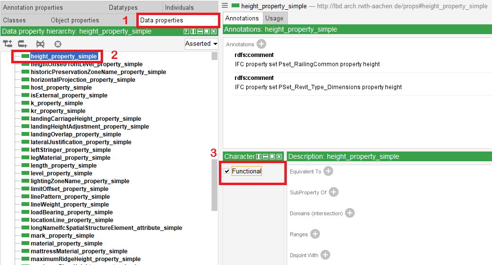
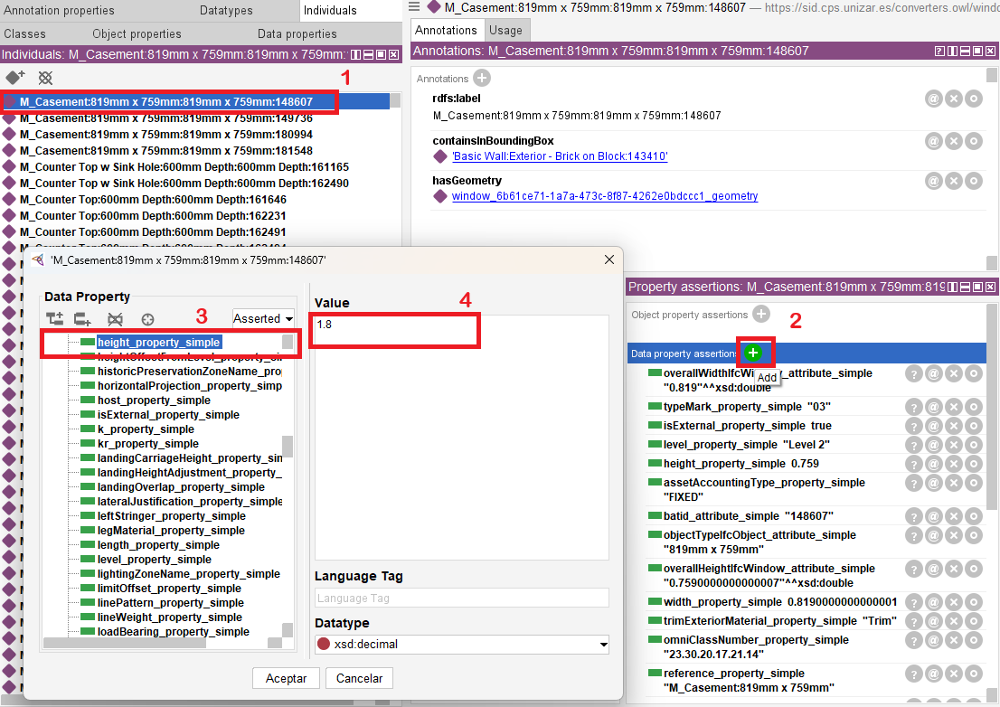
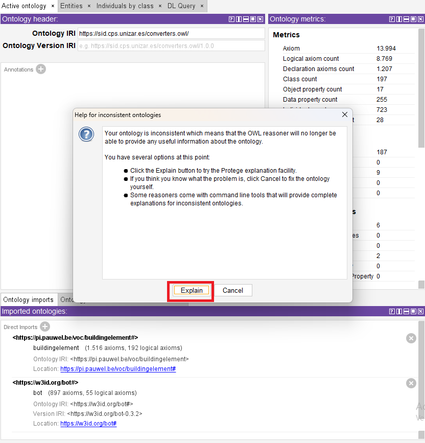
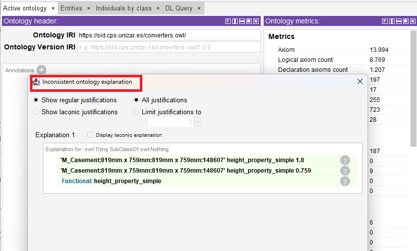
10 Descarga
10.1 BIMvision
Puedes descargar BIMvision desde su página oficial. Tendrás que introducir tu correo electrónico para recibir el enlace de descarga y aceptar los términos de servicio. Una vez hecho recibirás un correo con el enlace para descargar el instalador. Sigue las instrucciones de instalación para completar el proceso. Al ejecutar el programa por primera vez, deberías ver algo como esto:
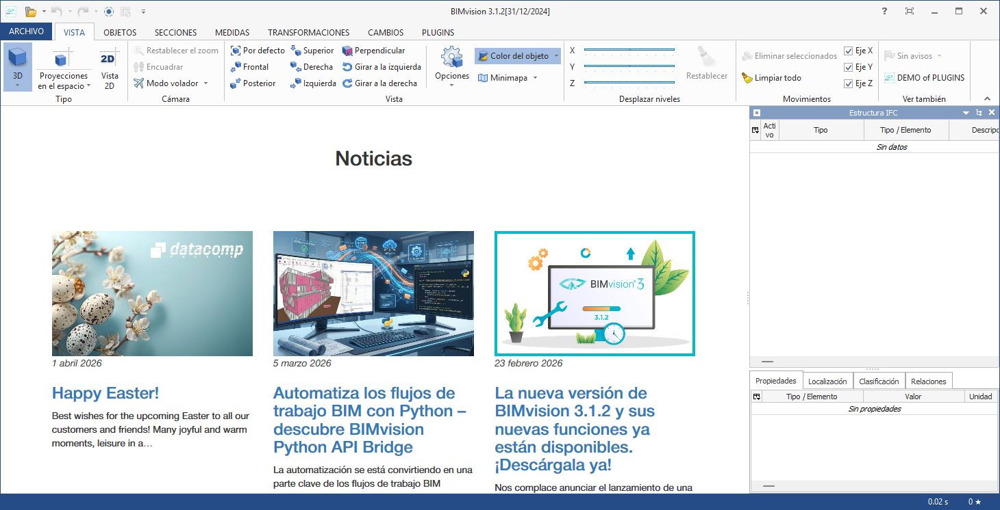
10.2 Protégé
Puedes descargar Protégé desde su página oficial. En la sección de descargas, elige la versión que corresponda a tu sistema operativo (Windows, macOS o Linux). Descarga el archivo comprimido y descomprímelo en una ubicación de tu elección. Ten en cuenta que Protégé no requiere instalación adicional, por lo que puedes situar la carpeta descomprimida en una ubicación que recuerdes fácilmente. Para ejecutar Protégé, simplemente abre la carpeta descomprimida y haz doble clic en el archivo Protege.exe (en Windows). Al abrir Protégé, deberías ver una pantalla de bienvenida similar a esta: